The Console and Conditionals
Table of Contents
1 Introduction
- So far you have learned how to communicate with the user of your web page using three message boxes.
window.alert()window.prompt()window.confirm()
- Sometimes, however, you want to be able to communicate with yourself. It's often useful to be able to see what your code is doing in a quick and unobtrusive way. For this we use
console.log()
Code It
- Let's start with what we call Boilerplate Code. This is just the HTML code we need to start playing with JavaScript. Copy and paste the following into your text editor.
<!DOCTYPE html>
<html>
<meta charset="utf-8"/>
<head>
<script type="text/javascript">
<!--DELETE THIS LINE WHEN YOU NEED TO ADD CODE-->
</script>
</head>
<body>
</body>
</html>
- Now we're going to send ourselves a little message using
console.log(). Add the following line of code to your HTML file. Don't forget that it has to go between the<script>tags.
console.log('Hi there Dev. This is a message from Dev')
- Dev is short for developer, by the way.
Save It
- Save your file in your JavaScript directory. Make sure you give it a descriptive name, ConsoleTest.html Please don't forget the
.htmlending. It's really important.
Run It
- Find the file you just saved in your JavaScript directory.
- Double click it to open it in your browser.
- Now comes the little secret that only Hackers know about. We're going to open up an inspector which will allow us to see what is going on in any web-page. The way you do this depends on the browser you are using.
Instructions for Internet Explorer
- Click on the gear symbol in the top right of the IE window and select 'F12 Developer Tools.
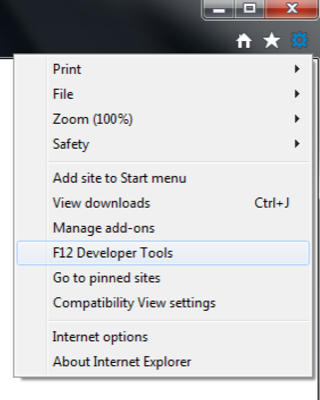
- In the bottom left of the screen, choose the console icon.
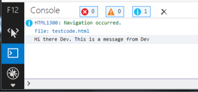
Instructions for Safari
- Safari likes to hide the developer menu. Click on Safari in the top left of the screen and select Preferences…
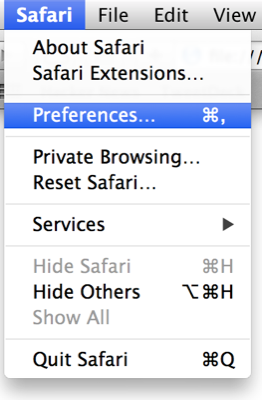
- Choose the Advanced icon and then check the box to 'Show Developer menu in menu bar'. Close Preferences
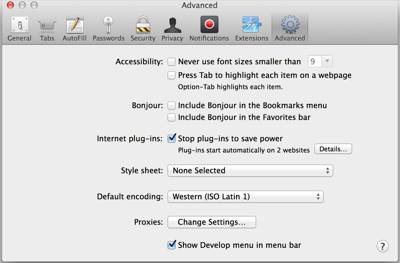
- From the now visible Develop menu, choose 'Show Error Console.
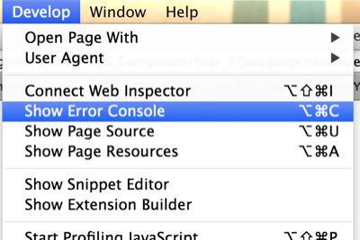
- The Console should appear at the bottom of the screen.
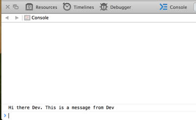
Instructions for Chrome
- From the View menu, choose Developer and then JavaScript Console.
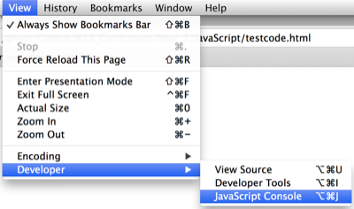
- The console will open in the bottom of the screen.
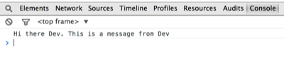
Instructions for Firefox
- From the Tools menu choose Web Developer and then Web Console.
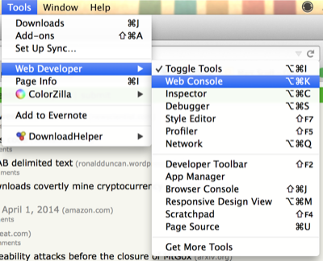
- The console should appear at the bottom of the screen
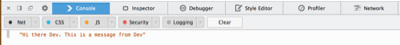
- If the console does not appear to show a message, just refresh your browser.
Try It:
- Have a go at getting the console to display other messages.
- Try declaring a variable
var myNumber = 100for instance, and get the console to output the variable.
2 Debugging your scripts.
- It would be great if we could write perfect code every time, but we all make mistakes.
- The console is a great way to see what mistakes you've made in your code, as it will often display messages telling you where there are errors in your HTML, CSS or JavaScript.
- We're going to make some mistakes on purpose now, to have a look at the messages the console sends to us.
Code It
- Copy the following lines of code into your text editor.
<!DOCTYPE html>
<html>
<head>
<meta charset="utf-8"/>
<title>Oops, what did I do wrong?</title>
<script type="text/javascript">
var myNumber = 20;
console.log('My Number is '+mynumber);
</script>
</head>
<body>
<h1>There's a mistake here somewhere.</h1>
</body>
</html>
Save It
- Save your HTML file. Call it mistakes.html
Run It
- Find your HTML file using your document browser.
- Double click it to open it in a browser and then have a look at any messages in your console.
Code It
- Can you spot the error? A
ReferenceErrortells us that we have told the browser to use a variable that it can't find. In this case it can't find the variable namedmynumber. - Change the code so that the line of JavaScript uses
myNumberwith a capital 'N' instead ofmynumber
console.log('My Number is '+myNumber);
Save It
- Save your HTML file.
Run It
- Refresh your browser or find the document and open in again.
- Has the error message gone?
Try It:
- Below are some more lines of JavaScript. Delete the lines of JavaScript that you currently have between your
<script>tags. - For each of the problems below, copy in the lines of JavaScript, save and run your code, and try and fix the problems reported to you by the browser.
- Problem 1
window.alert('This page is correct';
- Problem 2
consolelog('Hi Dev, you've got it right.');
- Problem 3
var yourAnswer = window.prompt('How are you feeling?')
windows.alert("I wonder why you're feeling "+ yourAnswer)
3 Conditionals (1)
- Conditionals are an important part of coding. You actually used a conditional in the first lesson.
- Conditionals allow the program to make a choice, based on a certain condition being met. (Or sometimes several conditions.)
- Imagine you are walking along a street and you come to a restaurant. A simplified conditional for what you do might look something like this;
IF i am hungry
enter restaurant
ELSE
continue walking
- Sometimes though decisions are a little more complex, and we might need to have more than just two options. Imagine you've sat down in the restaurant and the waiter has come to take your order.
IF i am very hungry
order a starter and a main course
ELSE IF i am only peckish
order a starter only
ELSE
order a main course
Code It
- Let's use a simple conditional in JavaScript. You'll need to remove all your debugging lines from between the
<script>tags, then write in the following lines.
#+BEGINSRC javascript
var choice = window.confirm('Click OK if you understand conditionals');
if (choice = true){
window.alert('Then continue to the next section');
}
else {
window.alert("You'd best ask for some help then.");
};
#+ENDSRC python
Save It
- Save your code. You might want to keep this one as reference for later on, so call it SINGLE-CONDITIONAL.html.
Run It
- Find your
HTMLfile using your document browser and open it. - Did it all work.
Try It:
- Alter the code so a different question is asked, and different responses are given by the browser.
4 Conditionals (2)
- Look at the code below and then read the explanation of the syntax.
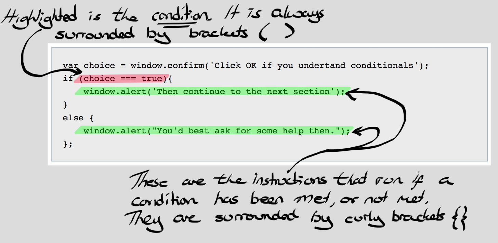
- The first line is just a variable declaration and an assignment. If the user clicks OK then
choice = true. If the user clicks Cancel thenchoice = false. - The second line is the beginning of our conditional. The condition is always placed between brackets
(). - At the end of the line is a curly bracket
{. Everything between the{}happens only if the condition is met. - The last two lines cover what happens if the condition is not met. If the user clicked Cancel, then choice is
falseand the secondwindow.alert()happens.
Code It
- Now delete your old script and we'll type in a new one.
var userName = window.prompt("Hi, what's your name?");
if (userName === 'Marc'){
window.alert('Nice to meet you ' + userName);
}
else{
window.alert("I don't like the name " + userName);
};
Save It
- Save your code.
Run It
- Run your code in a web browser
Try It:
- Change the code so it uses your name.
- Get the program to ask the user another question, after the first one. Maybe it could ask them where they live, and then give a suitable response.
- What happens if you use a lower case letter when typing in your name?
5 Using Conditionals to make a quiz
- You're to make a quiz for someone to play, using conditionals.
Code It
- Let's start by creating a new document in your text editor.
- Save it straight away as Quiz.html
- Now we'll add our boilerplate.
<!DOCTYPE html>
<html>
<meta charset="utf-8"/>
<head>
<script type="text/javascript">
</script>
</head>
<body>
</body>
</html>
- First we'll want to declare a variable to keep track of the user's score. We'll assign the value 0 to it to start off.
var score = 0;
- Now we'll need to ask a question and save the answer as a unique variable.
answerOne = window.prompt("What is the capital city of England");
- Next we'll use a conditional to see if they get the answer right. We'll update the score and use
console.log()to output if they got the question right or not.
if (answerOne === "London"){
score = score + 1;
console.log('Question 1 correct');
console.log('Score is ' + score);
}
else{
console.log('Question 1 incorrect');
console.log('Score is ' + score);
};
Save It
- Hit Ctrl + s on your keyboard to save your file.
Run It
- Locate your file in your document browser and open it.
- Does it behave as you expected?
- Can you see the output in the console?
Code It
- At the moment, our code penalises people who accidentally forget to use a capital 'L' in London. Let's fix that.
- Alter your code so that they get 1/2 a point if they use a lowercase 'l'
if (answerOne === "London"){
score += 1;
console.log('Question 1 correct');
console.log('Score is ' + score);
}
else if (answerOne === "london"){
score += 0.5;
console.log('Question 1 correct');
console.log('Score is ' + score);
}
else{
console.log('Question 1 incorrect');
console.log('Score is ' + score);
};
Save It
- Hit Ctrl + s on your keyboard to save your file.
Run It
- Locate your file in your document browser and open it.
- Does it behave as you expected?
- Can you see the output in the console?
Try It:
- Try adding a second similar question to your quiz.
- Make sure the score is updated and a console message is displayed.
6 Greater than, less than and equal to
- Sometime we might want our users to guess a little, if the question is really hard.
- When guessing numbers we can use the greater than (
>) and less than (<) operators along with the and (&&) operator to test if they are close. - For instance the number of days in a year is exactly 365.242, but this number is hard to guess or remember. We could give the user marks if they were close, by testing they were between 365 and 366.
if (answer < 366 && answer > 365){
DO SOMETHING
}
Code It
- Add this question to your quiz.
answer3 = window.prompt('In what year did Sir Alan Turing die?');
if (answer3 < 1960 && answer3 > 1954){
console.log('Question 3 close');
score += 0.5;
}
else if (answer3 === 1954){
console.log('Question 3 exactly right');
score += 1;
}
else if (answer3 > 1949 && answer3 < 1954){
console.log('Question 3 close');
score += 0.5;
}
else{
console.log('Question 3 incorrect');
};
Save It
- Save your code.
Run It
- Run your code in a browser by refreshing (F5)
Try It:
Try and add your own Question similar to Question 3, where a range of numbers can be accepted.
7 Badge It
Task
To earn your second Blue JavaScript Badge, complete the tasks below. Once you have finished, ask your teacher to check your app to make sure it runs correctly.
- You can place these questions in any order.
- Add a question that tests the user's mathematical skills. (Don't forget to do a type conversion when asking for a number)
- Add a question with at least three possible answers, all of which should give the users some points. (You can add as many
else ifas you like.) - Add a question that uses
>,<and&& - Add four more questions of your choice.
- Ensure that you are updating the score correctly each time, and displaying messages in the console.
- After ten questions have been answered, the quiz should use
window.alert()to do the following:- Tell the user the quiz is over.
- Display the user's percentage score.
- Give them a congratulatory message if they scored higher than 59%
- Give them a consolatory message if they scored lower than 60%